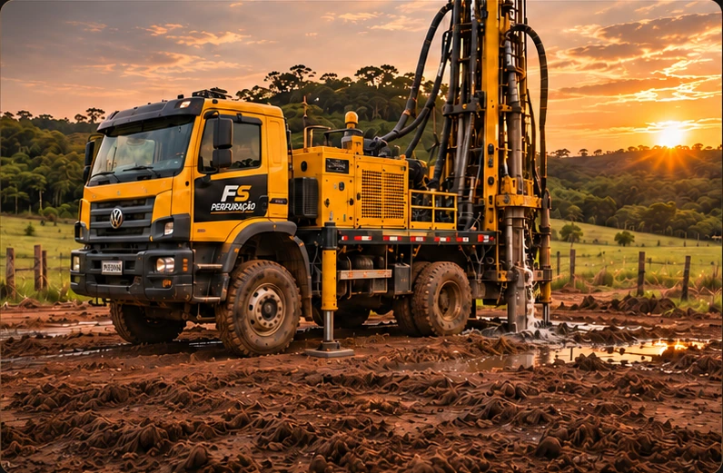
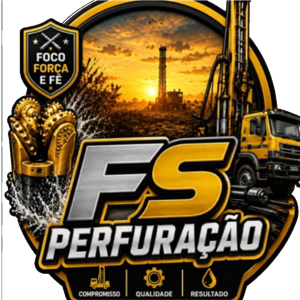
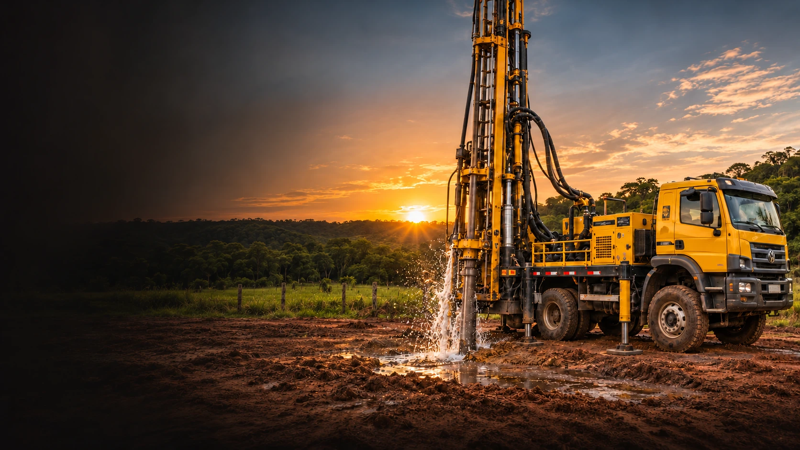
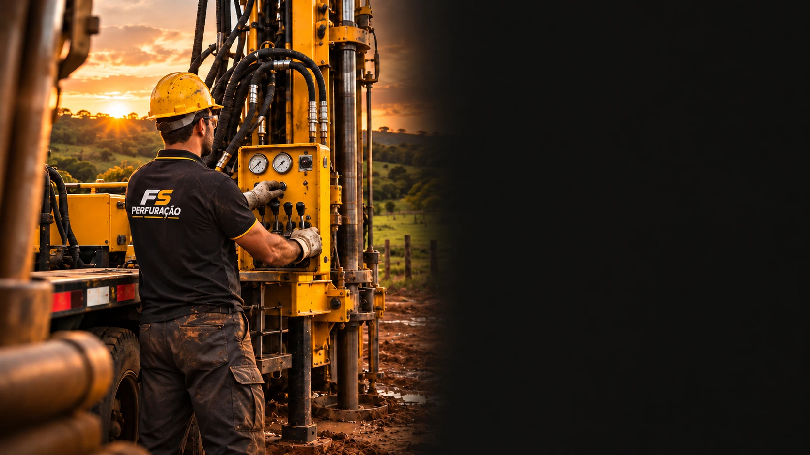
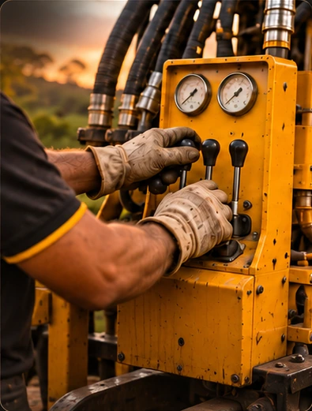
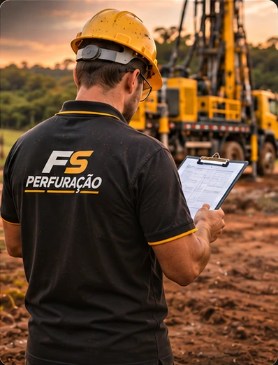
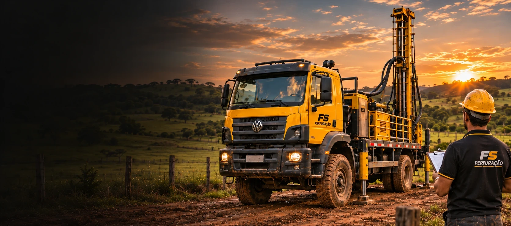

Perfuração de poços
Força e dedicação para o seu projeto.

Falar no WhatsApp
Perfuração de poços
Compromisso, qualidade e atenção em
cada etapa da perfuração do seu poço.

Foco. Força. Fé.
Sobre a FS Perfuração
Levamos foco, força e fé a cada projeto de perfuração. Trabalhamos com dedicação e atenção em cada etapa, valorizando a confiança de quem escolhe a FS.
Serviços
Conte com a FS para conversar sobre as necessidades do seu projeto e solicitar seu orçamento.

Força e dedicação para o seu projeto.

Cuidado em cada etapa do trabalho.

Uma conversa para entender o que você precisa.
Seu projeto merece atenção desde o primeiro contato.
Solicitar orçamentoProjetos
Estrutura, operação e atenção aos detalhes em uma visão do trabalho em campo.
Imagens ilustrativas.
Converse sobre seu projeto
Contato
Envie a localização do terreno e conte o que
você precisa. Vamos conversar sobre os
próximos passos do seu projeto de perfuração.